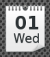
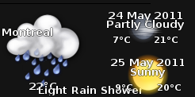
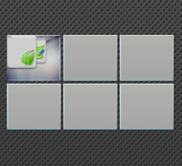

The Bodhi Guide to Moksha
Gadgets
This article explains what Moksha (E17) Gadgets are, describes some useful Gadgets, shows how to add new Gadgets from Moksha's repertoire, and briefly notes how Gadgets relate to Modules (which are the subject of a separate section of this guide).
What are Gadgets?
In Moksha, a Gadget is just about anything you see on the desktop. Gadgets are what other operating systems call "Applets" or "Widgets": small programs that do one thing and do it well. Some provide specific information about your PC or your environment. Several Gadgets are already on your default Bodhi Linux desktop, as they are included in the default Profile.
Note that most Gadgets can be placed either directly on the desktop or onto a Shelf. There are a few Gadgets (like Systray) that can only be placed on a Shelf.
Examples of Gadgets
| Calendar (A graphic calendar) |
 |
| Clock (An analog clock) |
|
| Forecasts (A graphic display of the weather in a given region) |
 | Pager (A Virtual desktop switcher) |
 |
{kind=link}
{kind=link}
{kind=link}
{kind=link}
Gadgets Displayed by Default
When you installed Bodhi Linux, a shelf was added by default to the bottom of your Moksha desktop. It contains the following Gadgets:
Default |
Start | Ibar | Taskbar | Connection manager | Mixer | Clipboard | Pager | Clock | System |
In addition you were given the default MokshaArcGreen Theme. The combination of Shelves, Gadgets and Themes constitutes a Profile, a particular appearance of your desktop. However this default Profile can be modified in many ways. This section will concentrate on adding and removing Gadgets. For more general information on manipulating and using profiles see the Profiles section
Adding New Gadgets
Gadgets can be added either to shelves or to the desktop itself.
Adding a gadget to the Desktop
In order to add Gadgets to the desktop, go to Main Menu -> Settings -> Gadgets and the Desktop Gadgets dialog will open.
Adding a Gadget to a Shelf
Adding a Gadget to a Shelf requires a slightly different procedure. See the Shelves Section of this Guide for details.
Gadget Settings
Once they are placed on the desktop or on a Shelf, each Gadget can be right-clicked to configure its appearance and its behavior. For example, when you first install the Forecasts Gadget, it gives you the weather for Sofia, Bulgaria. That is probably not what you want (unless, of course, you live there). So right-click it, open the menu Gadget Forecasts -> Forecasts Settings. In the dialog box that appears, you will see instructions for finding and entering the code for your city.
Gadgets Need Their Modules
What Gadgets you have available to add is determined by what Modules you have Loaded. Loading a Module reads it from disk storage and places it in RAM, but it won't be displayed on screen until you add it as a Gadget to the desktop or a Shelf. To Load/Unload Modules go to Main Menu -> Settings -> Modules. See the Modules Section of this Guide for more details.
Still more Gadgets
To keep the initial download and installation of Bodhi Linux as compact as possible, some excellent Modules were not included, but can be downloaded and installed via the Synaptic Package Manager just like other Linux programs.
For a full list of available Gadgets check the Module Reference.
See the Modules Section of this Guide for more details.
| Prev: | Contents: | Next: |
| Shelves | Index | Profiles |